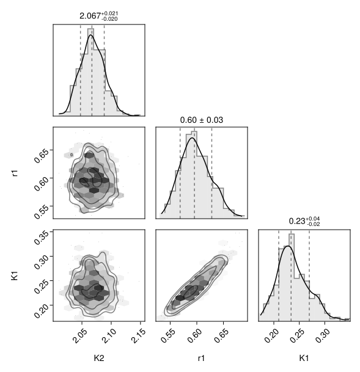
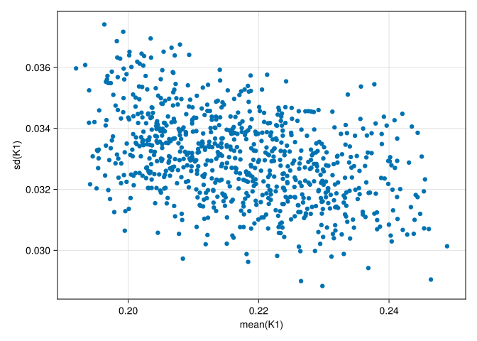
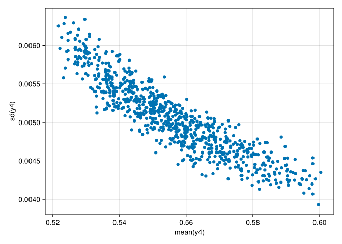

Inspect results of fitted problem
This tutorial leads you through extracting relevant information from the inversion results and to produce some typical plots.
First load necessary packages.
using HybridVariationalInference
using StableRNGs
using ComponentArrays: ComponentArrays as CA
using SimpleChains # for reloading the optimized problem
using DistributionFits
using JLD2
using CairoMakie
using PairPlots # scatterplot matricesThis tutorial uses the fitted object saved at the end of the Basic workflow without GPU tutorial.
fname = "intermediate/basic_cpu_results.jld2"
print(abspath(fname))
probo = load(fname, "probo");Sample the posterior
A sample of both, posterior, and predictive posterior can be obtained using function sample_posterior.
using StableRNGs
rng = StableRNG(112)
n_sample_pred = 400
(; θsP, θsMs) = sample_posterior(rng, probo; n_sample_pred, is_testmode = true)Lets look at the results.
size(θsP), size(θsMs)((1, 400), (800, 2, 400))The last dimension is the number of samples, the second-last dimension is the respective parameter. θsMs has an additional dimension denoting the site for which parameters are sampled.
They are ComponentArrays with the parameter dimension names that can be used:
θsMs[1,:r1,:] # samples of the first site of parameter r1Corner plots
The relation between different variables can be well inspected by scatterplot matrices, also called corner plots or pair plots. PairPlots.jl provides a Makie-implementation of those.
Here, we plot the global parameters and the site-parameters for the first site.
i_site = 1
θ1 = vcat(θsP, θsMs[i_site,:,:])
θ1_nt = NamedTuple(k => CA.getdata(θ1[k,:]) for k in keys(θ1[:,1])) #
plt = pairplot(θ1_nt)
The plot shows that parameters for the first site, $K_1$ and $r_1$, are correlated, but that we did not model correlation with the global parameter, $K_2$.
Note that this plots shows only the first out of 800 sites. HVI estimated a 1602-dimensional posterior distribution including covariances among parameters.
Expected values and marginal variances
Lets look at how the estimated uncertainty of a site parameter changes with its expected value.
par = :K1
θmean = [mean(θsMs[s,par,:]) for s in axes(θsMs, 1)]
θsd = [std(θsMs[s,par,:]) for s in axes(θsMs, 1)]
fig = Figure(); ax = Axis(fig[1,1], xlabel="mean($par)",ylabel="sd($par)")
scatter!(ax, θmean, θsd)
fig
We see that $K_1$ across sites ranges from about 0.18 to 0.25, and that its estimated uncertainty is about 0.04, slightly decreasing with the values of the parameter.
Predictive Posterior
In addition to the uncertainty in parameters, we are also interested in the uncertainty of predictions, i.e. the predictive posterior.
We cam either run the PBM for all the parameter samples that we obtained already, using the AbstractPBMApplicator, or use predict_hvi which combines sampling the posterior and predictive posterior and returns the additional NamedTuple entry y.
(; y, θsP, θsMs) = predict_hvi(rng, probo; n_sample_pred)size(y)(8, 800, 400)Again, the last dimension is the sample. The other dimensions correspond to the observations we provided for the fitting: The first dimension is the observation within one site, the second dimension is the site.
Lets look on how the uncertainty of the 4th observations scales with its predicted magnitude across sites.
i_obs = 4
ymean = [mean(y[i_obs,s,:]) for s in axes(θsMs, 1)]
ysd = [std(y[i_obs,s,:]) for s in axes(θsMs, 1)]
fig = Figure(); ax = Axis(fig[1,1], xlabel="mean(y$i_obs)",ylabel="sd(y$i_obs)")
scatter!(ax, ymean, ysd)
fig
We see that observed values for associated substrate concentrations range about from 0.51 to 0.59 with an estimated standard deviation around 0.005 that decreases with the observed value.